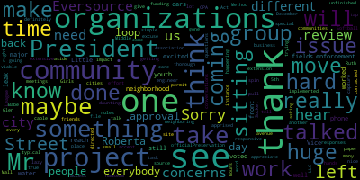
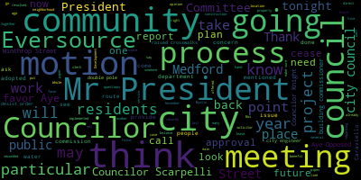
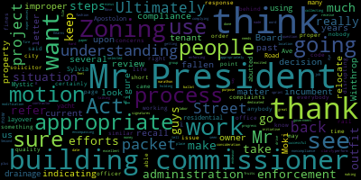
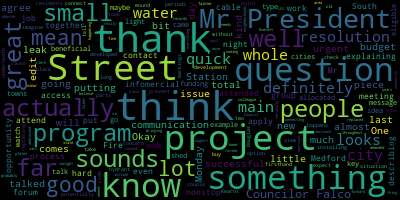

AI-generated transcript of Medford, MA City Council - Dec. 5, 2017 (Unofficially provided by MT)
English | español | português | 中国人 | kreyol ayisyen | tiếng việt | ខ្មែរ | русский | عربي | 한국인
Back to all transcripts
Heatmap of speakers
[SPEAKER_09]: I pledge allegiance to the flag of the United States of America and to the republic for which it stands, one nation under God, indivisible, with liberty and justice for all.
[Scarpelli]: Sorry, spin the rules so we can hear. Take something off of the unfinished business. That would be 17-734.
[Lungo-Koehn]: just want to go on record as recusing myself from the conversation. My parents live on South Street and I spoke to state ethics today and I'm going to recuse myself.
[Scarpelli]: Thank you, Mr. President. After extensive meetings with our friends from Eversource and a thorough review on many concerns and issues, they've been very responsive with aside from all of the official approvals through the city engineer and all that need to be apprised of this daunting task of a huge project that will take us through a few different cities. If we can have, I think that we've gone over every issue to nauseam and I appreciate everybody's effort and Eversource's responses to all of our concerns and issues and I move to accept and place it on file. Move approval, excuse me.
[Caraviello]: On the motion by Councilor Scapelli. seconded by Councilor Knight. All those in favor?
[Dello Russo]: Councilor Dello Russo. Mr. President, we've had, as Councilor Scarpelli mentioned, quite extensive meetings, and we've gotten a lot of answers. We've gotten a lot of response and thoughtful responses to the questions that we've asked on behalf of the citizens regarding this program. Uh, we've also, uh, uh, I think, uh, the representatives of, um, Eversource and the, um, uh, their, uh, uh, contractor who's going to, uh, execute the project, have listened seriously and intently to the concerns of the council regarding the citizens and what they want regarding traffic, regarding safety. And we also dealt in some of the previously negotiated items from the memorandum of agreement that was etched out between Eversource and the city administration and various department heads who have expertise in these matters. And although we were able to make some inroads and renegotiate some of the aspects of the Yalta conference, Mr. President, I'm satisfied as one Councilor to have heard everything satisfactorily that concerns me. approve of this project of the grant. Thank you.
[Marks]: Vice President Mox. Thank you Mr. President and I agree with my colleagues this has been a thorough and really in-depth process. We've heard about this project for at least the past two and a half years now regarding this underground transmission line and that Eversource was going to be doing this particular work in the community. This council had a public hearing back I think now it's over a year ago where we opened it up to the general public to ask some preliminary questions regarding the process. As I stated from the beginning and as I still state, this project in my opinion may benefit the overall grid and may benefit communities going out north but it has little to no benefit to the residents of this community other than 100% disruption on our streets, traffic, and everything else associated with this project. With that being said, Mr. President, I have to say over the last several weeks in meeting with Eversource and the Committee of the Whole meetings and asking the important questions that we did get many of our questions answered at the meeting. Part of the meeting tonight was to discuss some of the concerns we had from the last meeting and We did get I think some of the crucial issues in my opinion which as councilor Scarpelli brought up regarding notification of the neighbors and I feel very comfortable that There is going to be you know an exhaustive a notification by Eversource to reach out to the neighborhood, not only door-to-door, but also to have a public meeting, which I think will address many of the issues or concerns residents may have along this particular route. And not just residents on the route, Mr. President, this impacts entire neighborhoods. and not just people on Winthrop Street or Mystic Ave or South Street, but entire neighborhoods. Also tonight, we requested that the city's new leak detection program, which was implemented back, I believe, roughly a year ago, that when this construction work that takes place on our roads is gonna be in the proximity of our water mains, over and above our water mains, that we as a community have to monitor and make sure that if there is disruption to our 100-year-old water pipes or sewer pipes that we are safeguarded as a community to make sure that Eversource will pick up the tab when it comes to lead or cast iron pipes that may be disturbed during this process. And I think we've come to an agreement with Eversource and the city engineer will sit down and do case by case analysis on what they believe is warranted for repair. So I think that was a very positive outcome that took place. Also, Mr. President, and this has been an issue near and dear to me, raised crosswalks in the community. Back some years ago, Mayor McGlynn at the time implemented a pilot program to do three raised crosswalks and some four years later we've only implemented one on Winthrop Street. But this particular proposal calls for not only the restoration of Winthrop Street, Mystic Valley Parkway, Salt Street, Main Street, Mystic Ave, but also Mr. President calls for the implementation of raised crosswalks. at Medford High School on Winthrop Street, Winthrop Street at the crosswalk between Memorial Park and Medford Community Gardens, which we all know is a very tough place to cross, and South Street at the entrance of the pedestrian pathway to Route 16. So I am pleased to see that Eversource has included that in the MOU that is signed with the city, and I'm also very pleased to hear that We're not going to take a minimal standard as the city solicitor, which I don't know if he's here. I think he may have gone home. And I don't blame him, he's put a lot of work in this project. But we're not going to follow just a minimal standard on erecting these raised crosswalks, but we're going to put something that's tastefully done, that aesthetically is pleasing, and something that adheres to state and federal statutes when it comes to transportation and public safety. So that is a very positive outcome also, Mr. President. I, as one member of the council, would like to see in future agreements. We heard from Eversource that even though they're coming to the council for a grant of location, that they already have a memorandum of understanding with the city. So they already sat down with the administration and negotiated everything they'd like to see take place with this project. However, they left out one key factor. that this project needs approval from the city council. And as we all know, the city council has its own opinion, its own ideas. And we also communicate with residents and department heads and so forth. And I would say for future projects, it would be helpful that the city council, if any permits are required from us, we be a part of the process. in particular when it comes to a memorandum of understanding. The city of Boston, which I mentioned tonight, and I won't go into it, but I will bring it up at a future council meeting, has a great process for granting of locations. It's not done by the city council. It's done by a public improvement commission. And that commission is comprised of a number of members that sit on the transportation department, property management, inspectional services, water and sewer commission, and the engineering department. And that body gets together and holds public meetings. And they discuss with whoever the utility is what some of their plans are and what they'd like to see for mitigation. And the approval process is a lengthy process which also involves a checklist. And I don't know if Cassandra, the city engineer is here tonight, but I don't know if our process has a thorough checklist on the process to which takes place in the community. We may or may have not, I don't know. I can tell you for future reference, Mr. President, it may be worthwhile to look at city ordinances and maybe at some point have the city council removed from the process and create a commissioner board that has all the parties together and collaboration that can deal with the utility companies. And it's one stop shop. And as Ebersource mentioned, when they deal with Boston, when they get approval from the PIC, which is Public Improvement Commission, that when they leave there, they're done more or less with the permitting and all the process which takes place. And that's not the case here in the city of Medford. They've met with the administration, they've met with the council, and now they're going to have to go for street openings and other permits and so forth. And I think it would only be advantageous for this community and also beneficial to the residents of this community to have one body that looks at it with people that their expertise is in this particular field. And I am going to offer that as a future resolution. But tonight, Mr. President, I do support this and I look forward to the continued commitment that ever put out there to work with the city to provide a clerk of the works that will be the direct communicator with residents in Eversource or residents in Bond Construction so that residents aren't going to feel the frustration when they need to get a hold of someone at 830 at night and unable to get anyone at Eversource, but they will have a contact that they can reach out. We heard from the city engineer that there will be a working group within the City of contact names and numbers that residents can speak with and that will alleviate a lot of concern. Also City Solicitor Rumley mentioned tonight and I thought it was an important subject that anyone along this particular route that needs access in and out of their property, someone that might be confined to their home or someone that may need dialysis or other health concerns that Eversource and the city work together to locate where these people are and to communicate directly with the people on the need for access when this construction is taking place. So I want to thank all the parties involved. in particular the city engineer and the city solicitor for their dedication on this project, Mr. President.
[Caraviello]: Thank you, Mr. Vice President. On the motion by Councilor Scarpelli, seconded by Councilor Knight, Mr. Clerk, please call the roll.
[Clerk]: Councilor Dello Russo? Yes. Councilor Falco? Yes. Councilor Knight? Yes. Councilor Longo? Current. Vice President Martz. Yes. Counsel Scarpelli. Yes. President Caraviello.
[Caraviello]: Yes, six in the affirmative, none in the negative, and one abstention. Is that correct? Motion passes. Mr. President. While we're on the suspension, yes Mr. President. Councilor Scott Bealli.
[Scarpelli]: Can we pull up paper 17-590, it's the Method Association LLC, Middle Glen Mall, special permit extension hours, 30 day review for December 5th, if we can?
[Caraviello]: Yes we can. Disregard the special permit for Wegmans, I had contacted John Beluso and he has said that there is no complaints or problems over there that have been reported to him. I also spoke to the president of the Condo Association for 3920, Mrs. Valley Parkway, and they have said they had no concerns that have been reported to them. Do you want to make a motion to? Yeah, if I can make the motion that we now. 60 day will be the next one. 60 day next review. On the motion by Councilor Scarpelli, seconded by Councilor Falco. All those in favor? Aye. Motion passes. While we're under suspension. While we're under suspension, Councilor Lungo-Koehn.
[Lungo-Koehn]: Thank you, President Caraviello. If we could allow a couple minutes, a resident would like to speak with regards to the.
[Caraviello]: We have a resident that would like to speak. Good evening. Name and address of the record, please.
[Ducey]: Mariana Ducey, 2 North Street, Medford. I was before the council last week, and you people passed a resolution regarding the extension of the comment deadline for the Green Line project. And the resolution passed, but yet there's been no reverse 9-1-1 call. That was the resolution. So I'm here to question why, what happened.
[Lungo-Koehn]: If I may, Council President. Council Member Green. Thank you. Thank you for coming again. We did pass a resolution requesting that the reverse 911 call go out, and I think that definitely should have been done before today, but we still have one week left. Comments are open and are due no later than 5 p.m. on Tuesday, December 12th, so there's one more week to comment on the further extension of the Green Line. I sent an email out to the Mayor today to ask if the Mayor's office today to see if we could get a reverse 9-1-1 call to notify the residents, the entire city, especially those that live in the hillside in South Medford. I'm publicly asking that a reverse 9-1-1 call go out. notification hasn't been great on this project and I think that's essential that we let the public know whether they're for or against or have concerns they have a right to be heard and a right to know what's going on and when deadlines are and when they're extended and when meetings are and this is just one component so I hope that we can get that reverse 911 call out tomorrow.
[Ducey]: If there's an objection from the city hall here, I'd like to know what it is, why they didn't want to send this out because, you know, I mean, the same reason that people weren't notified about the meeting to begin with still stands because the same population didn't know that the deadline was extended. So it's the same principle. And they agreed to do the reverse 9-1-1 to tell people that the meeting was scheduled for Thanksgiving week. So I really can't see why they don't want to continue this way. Going forward, I hope MassDOT does a better job of communicating with people. I think Councilor De La Ruza last week passed an amendment to the resolution to say that he would like the MassDOT to notify people by mail. So, we'll see what happens in the next round.
[Dello Russo]: Councilor Dello Russo. Just briefly, on that note, as you remember early on in the process, 13 years ago, that was one of the major concerns that I think people who administer projects like this sometimes become, because they live in a world of email communication, sometimes lose track of the fact that not everybody lives on that planet, and that we're dealing with a bigger solar system, and so various modes of communication have to be employed. And that's why we sent that letter out to the department.
[Ducey]: Right, I appreciate that. Not only that, but 13 years have passed, new people have moved into the neighborhood that didn't even know about this project, that couldn't even get on any kind of a list because they didn't know about it. Exactly. So I appreciate your requesting the reverse 911 again, and we'll hope for the best, I guess.
[Caraviello]: Thank you. Thank you very much. Thank you for your hard work.
[Dello Russo]: While we're on suspension? While we're in the suspension, some citizens on Winchester Street would like to address the council regarding a matter that we all received notice on.
[SPEAKER_09]: Mr. President. Good evening.
[Obola]: Name and address of the record, please. My name is Fran Abola. I live at 9 Alfred Street. First of all, I'd like to thank everybody here for giving me an opportunity to listen. hear what's going on. I've been living at this address my whole life. I'm right next to Nardone Electric. I still own the property. When he came here in 1995, I never had a problem with anything that I had a problem with. I could call Steve. I still have his number. I'd say, hey, Steve, this is what's going on. And everything always seemed to be resolved. His business expanded, and he left the premises. He moved to Woburn. And that's when all the trouble started. A company by the name of J.F. White, which is probably one of the top ten contractors, I would say, in Boston. They come in in this area and they totally disrupted the neighborhood with noise, banging, loud, I've been woken up, I have all the records here. I mean, I just started filming. This is what happened since 2015, 16, when I moved in. I didn't film any of this, because I was trying to resolve this all with Steve, who was pretty cooperative, trying to help me. But it just seems we weren't getting anywhere, we weren't getting anywhere. But I have started taking documentation with my phone, which is, my house is literally My bedroom was from here to where that gentleman is, Mr. Lepore, of where all the pipes are being stored. They get slammed down, they have a fork truck that's made to pick up four tons, okay? They slam the pipes down, 6.30 in the morning, I've been woken up about 20 times, I have all the dates here, every video can back up everything I'm talking about here. And I'm talking about four o'clock in the morning, one o'clock in the morning, and it just totally disrupts the neighborhood. I've tried to have them stopped. I went down to the building inspector, found out, oh, there's, I spoke to a gentleman by the name of John Bufuso, and he said, oh, you know, there's nothing we can do, you know, I go, we're not doing electrics, not operating the property anymore. He goes, well, that carries on to the new tenant. Well, you know, looking at everything, and then I asked to go back to get a proposal in 1995 when the ordinance was changed exclusively for Nargon Electric, that they were allowed to operate there. This building was used for storage, car storage for Knox Brothers Dodge, and before that, back in the 1900s, it was used to store Army Jeeps that used to come off the trains. So this building was always storage. It's not like, you know, You moved in the neighborhood, you knew what you were living next to. It was always quiet, you know? It was just cars being parked. It wasn't anything business-disruptive. Now it's gotten to a point where I work, you know, a demanding job. I work a lot of hours. I'm not even home that much, you know? I work double shifts sometimes. I get woken up at 1.30, 2.30, 4 o'clock in the morning, 6.30 in the morning, 5.30 in the morning, pipes banging, and the pipes literally have destroyed my kitchen floor, blew the tiles right up, because they bring this pipe down that's 30 feet long, about 26 inches wide, and slam it down, and boom, bang. And it sounds like, you know, and the grinding, I have an audio clip for you. think you want to hear it. It would be a great soundtrack for Guantanamo Bay, because it's torturous to listen to. And you've got to hear this at 6.30 in the morning. And then another thing, too, I just want to, is the other day they have a flatbed truck I mean, they're supposed to be, you know, whatever's going on, you should at least have the safety involved in whatever you do, okay? Winchester Street, they come down with a flatbed truck, they block the whole street, and then they come out with a fork truck and block the whole street and block the two neighbors behind there on Winchester Street. They can't even get out of their own driveway. Not even calling a cop to come down on a detail. And all we want is we want peace, and we just want it to stop. We haven't got one, no one knows when they're getting out of there. We don't know when the lease is, no one knows anything. We try to speak to this, you know, the building commission, he says we're in violation, they're in violation. Well, they're in violation from the day they moved in. They're not Nardone Electric, they're J.F. White. Well, they're trying to find another place. Find another place, what about the neighbors? It seems like they're more concerned on getting a place for J.F. White. And it's totally disrupted the neighborhood. Dumpsters full of stuff, seven in the morning, throwing stuff, and all the trash isn't even from the job that they're working at at that building. This trash comes in on a flatbed truck from Kendall's, because I work at MIT every day. This trash comes from the work they're doing on the bridge from Kendall, fills up the truck with trash. They used to come in at one o'clock in the morning, waking me up, slamming the door, that stopped. Now they come in at seven o'clock in the morning with the truck full of trash, First thing they do, boom, start emptying out, boom, start throwing everything in the dumpster. The grinding, the doors are wide open, this guy's outside grinding next to stuff, they're settling tanks, flammable products, they just do whatever they want, there's no control. And I just, you know, I'm kind of upset about it, because I've been putting up this for three years. And I just want your guys' help. If you can help, just let me know, when does this end? Who's gonna enforce this? Who's doing this? These people are doing whatever they want. When are they gonna get out? I can't even find out when the lease is or when they're supposed to get out. I just came here tonight just to address the attention to everybody here and just ask for some help and put us in the right direction on where we go with this. for the whole neighborhood. It's really gone totally out of control. And if you go by there and see the pipe, how big it is, it's insane. I get all this video and stuff, I don't want to play it for you, but if you want to hear one grind, I'll let you hear it. This is at 6.30 in the morning. I have to decline that call, sorry about that. This is next door to my house. All day. This is next door to my house. What they do is they grind it. What they're doing is they're prepping the pipes for the big dig over there, whatever they're doing, I'm sorry, the Kendall Bridge. And what they're doing is they're prepping all the big pipes, putting all the elbows on, the offsets, the heat exchangers, whatever they're putting on. And then they grind it, they weld it, they're welding outside. I get video of sparks flying all over the place. And then they come in, it's 6.30 in the morning with a big flatbed truck, and this thing backs up. That's all it does is beep, beep, beep. And then they load the flatbed on and they take it out. You know, there's guys urinating outside next to the dumpster. I mean, I didn't have a can with me every time. But you know what? I wish I had one with me, but I'm not home all the time. So I don't know even what goes on during the day. She works from her house and she deals with the day stuff. But I'm not even home that much. in the morning and I'm out early and then I come home late at night.
[SPEAKER_01]: I live across the street. My name is Mark and I currently live at 8 Alfred Street and I work a couple days a week from home. I work for Philips Healthcare, an international company, so I take a lot of early morning international phone calls and conference calls throughout the day and basically from spring to fall I can't have my windows open during the day because I can't be heard on my conference calls.
[Knight]: Thank you.
[Caraviello]: Councilor Dayton.
[Knight]: Mr. President, I think that this is a matter that's appropriate for further review from our building commissioner. It's my understanding that in our packet here, there is a letter from Mr. Moki to the property owner indicating that the current use is an improper use. It's not in compliance with the Zoning Board decision. And it's also my understanding that there was a process to relocate this tenant, Mr. President. But if we look further in the packet, we'll also see that that process has fallen through. So I think it would be incumbent upon us to figure out where we are in the process from our building commissioner to see what's going on. Ultimately, we've had situations like this in the past. If you recall several years back when they were doing the Winthrop Street drainage project, they were using Apostolon Mystic Ave as a layover yacht, which abutted Sylvia Road, which is a residential street. And many of the same complaints and same concerns came up. you know, working with the building commissioner and the administration, we were able to get them out of there in short order. And I think that this is a project, a similar situation, and I think that you have everybody on the same page. I don't think that anybody in the administration wants these people here disrupting the quality of life, and I'm certainly sure that nobody behind this rail does. So with that being said, I think that the proper steps, Mr. President, would be to refer this to the building commissioner for a response to see what's going on. Ultimately, I think this is something that may have to go through the city solicitor's office at some point in time. But as of right now, it's up to the code enforcement officer to issue the appropriate fines for noncompliance with the Zoning Act and then go from there.
[Caraviello]: Thank you, Councilor Knight.
[Dello Russo]: Councilor Dello Russo. Thank you, Mr. President. I've spoken with Mr. Vola on a couple occasions about this and spoken to the Building Commissioner, Mr. Moki. Clearly, upon all the research you've done, Fran, that the activity that's going on is beyond the scope allowed in the initial variance given to the property owner some 20 plus years ago. The property owner's not in there. He leased the property out to a company that's clearly operating way beyond the scope of the restrictions placed on the use of that property. They are in the process from what the Building Commissioner has told me they are in the process of finding a new location. However, he doesn't have an answer on when that's going to be. And that's what has him concerned the most. Because it's too open-ended, and you folks need redress right away. I just want peace.
[Obola]: That's all. I can't. And the whole thing is, is we just We just want an answer. That's the whole thing. It's like everything's left up in the air. I don't know. I don't know.
[Dello Russo]: Here's what it is at this point. First of all, I have to share my surprise with J.F. White. You rightly mentioned, they're one of the top construction firms in Boston. They do enormous projects. And you would think, given their history and their success, that they ought to know how to treat people. And they're not treating you well. And that's sad. Mr. Moki has examined this and cited the property owner for a zoning violation. So a citation has been issued, all right? He goes through then a process of responding or appealing, and then they go from there. Hopefully this will be resolved before then. He personally met with the manager or whoever's in charge at that location for the construction company. He explained to them and walked through the whole thing with them where they're in violation. So they themselves have been put on notice. He's assured us that the inspectional service director, Mr. Bavuso, is monitoring them on off hours and making spot checks. to survey the property. He wanted you to be aware of that. And then this is going to have to follow its course. I have to say that from what I've been told, the property owner is aware of what's going on clearly now and wants to move to get them out of there. Because he doesn't want them. That reflects poorly. Because as you recall, he was a good neighbor.
[Obola]: He's a great guy and I think what actually happened is I think he didn't realize that when they came in and took the space that this was all going to be going on. I think he was probably misled himself.
[Dello Russo]: Right. He probably thought it was going to be a dump spot for trucks and that was it. Like it's kind of been. And he was kind of turned key when he operated out there. The trucks left for the day on their projects. No. So that's where I've been updated on this. As far as a council resolution, that's up to the councilors if we want to refer this for action and further communication from the building inspector. But that's where he has us today.
[Obola]: Okay.
[Dello Russo]: All right.
[Obola]: Well, I'm glad everybody gave me a chance to speak.
[Dello Russo]: But this is important, too. This work that you put together is important, because I think it helped us as Councilors clarify the scope to which they're behind, and it also is clear that it's I know you, friend. I mean, you're not a complainer. I just want to sleep peacefully.
[Obola]: I don't sleep much as it is, you know. Exactly. You work morning, noon, and night. Well, thank you all. Thank you very much.
[Marks]: Vice President Mox. Thank you, Mr. President. I think we're beyond the point of just talking, giving lip service, and no matter how many violations are handed out, that's not going to help Fran's problem. That's not going to help the neighbors' problems. At this particular point, it was clear when I read that document that although they're saying they have plans to relocate, But when you don't give a time frame, to me, that's just lip service. So I don't have too much confidence. I don't know how long their lease is, as you mentioned. They could have a 10-year lease, 5-year lease, who knows. But I think at this point, And I've been on the council for a number of years. I think this calls for a cease and desist order, which could be handed out by the building commissioner. And I think we're at that point. I shouldn't say I think. I know we're at that point. And I think the Building Commissioner has to line up all his ducks before he does that. But I think we're at that point right now that I would ask the council to take a vote to have the Building Commissioner look into a cease, an immediate cease and desist order based on the fact that they're working prior to 7 a.m. in the morning, which is a violation of zoning ordinances. They're also doing work in that particular location that is not of proper use. which I think the building commissioner already cited them based on that. And to me, that's enough information to have in hand to go and provide a cease and desist order, which would have them close operations immediately until it goes to court. And I'm sure any business, especially if they're doing work, like you're mentioning, are not going to want to close their operation. So it really brings them back to the table once this action is taken. So I would ask that in the form of a motion, Mr. President, that we direct the building commissioner to issue a cease and desist order immediately on this particular property.
[Caraviello]: Thank you, Mr. Vice President.
[Lungo-Koehn]: Is that a point of information? I don't care. Thank you, President Caraviello. I agree with Councilor Marx. I think from those, just listening to that one clip, that would drive me absolutely crazy, never mind while I'm sleeping, during the day while I'm trying to work, and I think we need to get a little tougher as a city on this establishment. cease and desist seems to me like it's probably the way to go. I'd also ask that we request an opinion from the city solicitor, depending on how long it takes to actually cease and desist the operation, with regards to if the permit was given to Nardone Electric and only to them, how is JF White operating at the site? I think that was an important piece of information that maybe the building commissioner, um, needs an opinion from the solicitor to shut down operations. Also, the hours of operation, it seems like it's going all through the night, all through the morning. There is a start time and an end time that should be followed. So I think that's an important piece of information as well. I can't imagine every night listening to that noise. So whatever the city needs to do, I think they need to do it as if it was their home that was on 8 or 9 Alfred Street. So I would second that. resolve.
[Caraviello]: Councilor Knight.
[Knight]: Mr. President, to clarify the motion that I made, the motion that I was making was to refer the paper to the Building Commissioner Enforcement of the Zoning Act, which would be all-encompassing. It would take into consideration any and all steps that he needs to take to make sure that there's a complying use at this location.
[Caraviello]: Okay. We have two motions on the floor. We have one from Councilor Marks, Vice President Marks, and we have one from Councilor Knight. As amended. As amended. So, which one are we gonna go with?
[Clerk]: I think they're one and the same. I just wanted to clarify what I was saying.
[Knight]: The purpose of enforcing the zoning act is to get a modification
[Caraviello]: Councilor Marks is asking for a cease and desist.
[SPEAKER_09]: Which is probably a step in the process of enforcing the Zoning Act.
[Marks]: Right, I think we're at the point right now where that's the highest level of council to accomplish the request.
[Caraviello]: Okay. Other than the zoning, that's fine. All right, we'll go with Councilor Marks' motion that the building commissioner order a cease and desist, seconded by? Councilor Dello Russo. Councilor Dello Russo, all those in favor? Aye. Motion passes. Motion to revert back to- Thank you very much. Thank you, Mr. Lola. Thank you. Have a good night. Motion to revert back to regular business by Councilor Scarpelli. All those in favor. 17785, and offered by Vice President Mox, be it resolved that the double poles on Alexander Avenue, pole number 4444 and 4443, and on Barnaround, pole number 2994, be removed in the interest of public safety. Vice President Mox.
[Marks]: Thank you, Mr. President. I would just ask that this be sent to National Grid for immediate removal of the double poles. And also, if we can get a report I believe it was several months back I asked for an update on the double pole report, and I don't think we have yet to receive an update. I'm seeing more and more double poles throughout the community, which is good. It means they're replacing older poles, but we also want to stay on top of the utilities to make sure they're removing the double pole, Mr. President.
[Caraviello]: Thank you. On the motion by Vice President Mox, seconded by by Councilor Scarpelli, all those in favor? Motion passes. 17-786, petition by Roberta Cameron, Ralph Nordstrom of the mass to address the council for an update of the completion of the community preservation plan in the opening of the application process for the first round of funding.
[qIvMl_-GSJQ_SPEAKER_17]: Yes, Doug Carr, 124 Boston Avenue in Medford. Roberta Cameron is on her way here. She should be here shortly. She's the chair of the Community Preservation Committee. She asked me to speak on her behalf until she gets here. and to answer any questions that the Council may have. I've been serving on the committees, the CPC, since it was formed in May of this year. I believe you have a four-page handout that summarizes the plan in front of you that was distributed with the meeting minutes today. And I just want to summarize a couple quick points and then take any questions you may have about the CPA and CPC. So over the last six months, the Community Preservation Committee has undertaken to fulfill its obligation to undertake a study of the community needs across Medford. We coordinated with many of the boards in this building and a lot of stakeholders and committees across the entire city. That included things like the Friends of the Medford Public Library, the Royal House, Friends of the Fells, really anyone who could possibly be a recipient or a stakeholder in the CPA process. So we've just published our final community preservation plan. It's online, and it's soon to be available in print. And we have also opened up the application process for the first round of funding. There will be two rounds in 2018. The first application process is just for determining if the project is viable. That is due on December 15th, which is 10 days from today. They'll be awarded, the funds will be awarded in March of next year and then the fall of next year as well. Two rounds for fiscal year 17 and 18. And every year following will just be in one round in the fall of each year. So we, again, May will be the award of the first round, October the award of the second round, and October going forward for each year. It's a two-stage process to determine eligibility first, which is the 12-15 date, and then a more detailed application that will obviously get into more details about how much money it costs, the project, who's going to benefit, if there's any matching funds, and how it will serve the city of Medford in terms of the most number of people. We'll also consider some off-cycle applications on an as-needed basis. There has to be extraordinary circumstances to do that. We're not going to just open up the process unless there's a real need. And that could be the city of Medford. It could be somebody else. But we're not going to do that as part of our regular basis. We're going to have everyone compete and then evaluate all the projects. As the city council knows, you are the final step in the process in terms of approving these projects. But the projects start really from the ground up. They're more of a grassroots thing from nonprofits and from citizens. It could be community groups, neighborhood groups, park advocates, a whole bunch of different options, obviously. So we also intend to set aside $25,000 in funding for small projects for CPA funds, up to $5,000 for projects with a total cost of up to 10. A very simplified application process to, again, to kind of make sure we capture both the big and the small and the medium-sized projects as well. It's important to note, as I mentioned before, the city council has the final approval for our CPA funding in order to spend community preservation committee grants. All proposals will be vetted open to the public. There'll be public hearings. People will have a chance to advocate for their project and evaluate and give opinions on all the projects that are being submitted. At present, the general consensus of the Community Preservation Committee is that we basically equally distribute the funds right now until we understand what's going to be submitted between open space and recreation, affordable housing, and historic preservation. Obviously, we don't know what's going to be submitted yet, because nothing has been submitted yet. When we get the projects, we'll obviously evaluate them then. But our thought was, after the public forums we had, the public input we had, and talking to all the stakeholders, that we wanted to kind of give ourselves flexibility, but keep generally distributed evenly amongst those three categories. As you all know, by statute, we'd have to have 10% minimum for each of those categories. But that leaves 70% that is beyond the administrative needs that is discretionary in terms of which bucket of grants that they go into. As shown in the handout, if you look at the first page, the priorities and goals are laid out pretty clearly. And I'm obviously here to answer any questions, specific questions you may have about the process or what the needs are or how we're going to evaluate these projects. So I open up to the council to ask any questions you may have.
[Lungo-Koehn]: Councilor Lungo-Koehn. Thank you, President Caraviello. Thank you, Doug Kerr, for coming to explain. My first question just would be with regards to, I understand May and October will be, funds will be awarded, and then October, every year after that, going forward. And I think going forward, it will be more of a timeline known to the public. So my question is with regards to this December 15th eligibility determination form due date. How have we advertised that so far? And when did the advertisement start? I just want to make sure that people are well aware of it and have known for a while. It seems just like a very quick date.
[qIvMl_-GSJQ_SPEAKER_17]: We do have a coordinator, as everyone knows, Danielle Evans, who was hired by the CPC. who works three days a week in this building. And as part of her job is to basically distribute that information as wide as possible into the city. I know she has a big email list that's been developed over the last six or seven months with all the people that we've met. Obviously it's on our website as well. I believe there's a link on the city website as well. I don't know if there are any other advertisements in the paper, but picking up on what was just talked about with the Green Line extension, obviously The more people that know about this, the better. And that we can't do enough in terms of trying to make sure, whether it's reverse 9-1-1, putting in a transcript. The point is that we will do our best to let as many people know as possible through as many forums as possible. We've already had two public forums attended by about 100 people over the last few months. And our meetings are obviously open to the public, as every open meeting is. But frankly, it is quick. It is happening relatively fast. It is the holiday season, so I can understand why people might miss it. The point also I think is worth noting is that if people don't get it in by December 15, there's still There's still opportunity to get it in, and there's still a second round in next year, so they don't have to rush. There's going to be at least $1.2 million, I believe, in each of those two rounds available. That's a significant amount of dollars. If your project is $10,000 or $20,000 or $30,000, that's going to go a long way. And we obviously want to have the maximum impact on the city of Medford in terms of improving the quality of our city, whether it's restoring a park, whether it's restoring a historic building, creating affordable housing. There's so many different avenues. If you had a chance to read the document that was put together by the CPC over the last few months, the needs in Medford are great. They are really profound. It's a real challenge with affordable housing in this city. There's a lot of historic needs in this city. And there's certainly a lot of demand for open space and recreation across this city. That is clearly, these funds are meant to fill those gaps and take the city, move the city forward. So I can try to get as much information to you, Councilor, as I can beyond what I just described in terms of the advertising. But I would just obviously ask people to go to our website, read the plan. And the application will take somebody 10 minutes to fill out. really to get it approved.
[Bm5-jrZInBw_SPEAKER_07]: Point of information, Joan Sear, 40 Cedar Road North. I believe the coordinator sent a request into the Medford transcript to have something in the paper, but I think she missed last week's deadline, so it's likely going to be in this week. It's not a lot of time, but this is a very quick round because we had to get our process in place, and then we finally got the application done, and we're trying to get the money out as quickly as we can. So the first round is going to be really quick. The second round is going to be on a regular time schedule and then future rounds.
[Lungo-Koehn]: So when did the coordinator send out a notice to her whole email list?
[Bm5-jrZInBw_SPEAKER_07]: I believe it was directly after we had, sorry, the initial meeting where we announced the plan and had some input from the public, which was, I believe, the last Monday. Last Monday. Last Monday night.
[Lungo-Koehn]: So the end of November. End of November, correct. And about how many emails does that go out to, do you know?
[Bm5-jrZInBw_SPEAKER_07]: I want to say over 200 people.
[Lungo-Koehn]: And then if they miss the December 15th deadline, that's for a determination form, so do they still have until March 2nd to do a full application for the first round?
[Bm5-jrZInBw_SPEAKER_07]: That, I'm not sure about that. It might be the second round.
[qIvMl_-GSJQ_SPEAKER_17]: I think for the smaller projects, it's going to be very simple. So I don't think it'll be difficult to get those in by the March actual award. We just want to make sure that nobody spends time working on a project that will not be funded by statute. We want to make sure it's viable as a project, so they don't fundraise, match grants, write all these details, and then it's not viable. We don't want to waste anyone's time, obviously. So it's important to get that step out of the way. And our coordinator, I think, will be, remember, she's here to answer all these questions. People can call her here at Medfed or stop by her office three days a week. I think it's Monday, Tuesday, and Friday. To talk about the process, to answer questions. She's been a resource for the committee as well, because we're new at this. She has experience in the community preservation arena from previous jobs.
[Lungo-Koehn]: She'll be able to help people with the actual applications too?
[Bm5-jrZInBw_SPEAKER_07]: Yes. And she's invited people to call her before they fill out the eligibility form to help them walk through the process. Is there a particular form of communication that the council thinks would be helpful for us to use when these deadlines come up besides website, Medford transcript, email?
[Scarpelli]: the loop maybe? I'm sorry? The loop on cable access.
[Lungo-Koehn]: Cable access, Facebook, any type of... I'm sure one on the Facebook page.
[Bm5-jrZInBw_SPEAKER_07]: Okay. I missed that one.
[Lungo-Koehn]: Yeah, no, my concern, and I appreciate all the hard work you've done. I know the committee's worked very hard, and I attended one of the forums, which was very, you know, it was a two-hour forum, definitely learned a lot. My concern just with this first round is that today is the 5th, and December 15th is when the applications are due. So that is, that's just my concern for this initial round. I feel like Yes, there will be many more rounds, but we're talking about $1.2 million. So I feel like it's a lot of money to rush organizations when you could maybe extend it a few weeks.
[qIvMl_-GSJQ_SPEAKER_17]: And there's no guarantee that we would award even half that if the projects aren't there or not enough people. That money just goes back into the fund for the next round. It becomes a much bigger round. We don't know that until we see what comes before us, obviously. So I know it is quick, but we are hoping that people will at least put in, literally spend 10 minutes, put together a project name, a couple sentences description, see if it's viable, and then spend the next few months really developing the project, really figuring it out. Do you need to hire someone? You know, is it available? Is the property available? Has the property got a master plan already in place? Is it something that's shovel ready? There's so many different factors here.
[Bm5-jrZInBw_SPEAKER_07]: That's just it. We just don't know what we're going to get. We could get a ton of applications. We could get no applications. I doubt that's going to happen. But if we need to change the timeline based on what we get, we'll have to do that. It's basically what our first option out there is. And if we need to change that, we will.
[Lungo-Koehn]: And they're being funded. It's not in the key dates, but the first round, you said, was in March. You'll be awarding.
[Bm5-jrZInBw_SPEAKER_07]: Right. So in consultation with you folks, since you're going to be approving the plan, we're trying to, on the first round, it's going to probably coincide a little bit. We're trying to get it ahead of your regular normal budget schedule. So that's why we tried to get it done in March, and then moving it to the fall to get away from your normal budget schedule.
[Lungo-Koehn]: That's it for now.
[Falco]: Councilor Falco. Thank you, Mr. President. And I'd like to thank you for all your hard work. I know this group has been meeting nonstop putting this program together. And I had an opportunity to attend the forum last Monday night at the South Medford Fire Station. And you did a great job. I mean, it was explaining the program. And there were a lot of good questions. And it was well attended. But I would definitely agree. If you can put something on cable access, I think even almost like an infomercial, just kind of describing what it's about, you know, how people can, you know, apply the process, who to contact with questions. I think that would be definitely beneficial. You know, people do, people do watch programs on that station. So I think it's something that, it's a great mode to, of communication to actually get a message out to people. So I think that, I would definitely agree. I think that, you know, a lot of, successful programs, it all comes down to communication. And I think that this is the key. But I had a quick question for you. Can you talk a little bit about the small projects? I think it was 25,000. You talked about that. I know that question came up last Monday as well. So if you could just shed a light on that, that would be great.
[Bm5-jrZInBw_SPEAKER_07]: So when Roberta and I attended a CPC forum that was run by the city of Somerville a couple months back, the other towns that have already implemented the CPA said that they had set aside a little bit of funding for really small projects, your gardens or that kind of thing. And I think what we said was the request would be up to $5,000 per project if the total project was 10, so really small projects. We just don't want the little guy feeling like they're going to get taken over by the big project that comes in. We wanted to set something aside for them. So that's pretty much what it is. It's a trial. We're going to see how it works.
[Falco]: No, I think it's a great idea. So the total project has to be $10,000. Is the total budget for that piece $25,000?
[Bm5-jrZInBw_SPEAKER_07]: The total request for CPA funding would be $5,000, as long as the total project was $10,000. So you put in $5,000 from some other source, we'd put in $5,000.
[qIvMl_-GSJQ_SPEAKER_17]: If I could echo on that, one of the evaluation criteria is for matching funds as much as possible. Not 100%, but it always, I think, and this is quite common in any grant application, if the applicant brings some money to the table to show that there's public support for it, and that money will go further, obviously, if we can spread that money and get matching. It could be a one-to-one, or it could be a partial match. I think that is one of the criteria that we evaluate, which most grant applications do, to benefit to the money to stretch as far as it can go. So we urge people, if they're looking for a $20,000 project, maybe they bring $5,000, $10,000, or even another $20,000 to the table, because it will obviously help the process and stretch the money further for the whole city.
[Bm5-jrZInBw_SPEAKER_07]: And again, everything is a trial for this first year. We've seen what other towns have done. We're going to try it here. If it works, great. If it doesn't, we'll try something else.
[Falco]: And as far as in the other cities and towns that you've talked to, that small piece of the budget that was allocated to small projects, is that something that's been successful?
[Bm5-jrZInBw_SPEAKER_07]: Oh, very successful. Very successful. That's why we wanted to implement it.
[Falco]: Good. Sounds good. I like it.
[Bm5-jrZInBw_SPEAKER_07]: Thank you. Councilor Nice.
[Knight]: Mr. President, thank you very much. I just want to say, keep doing what you're doing. You guys are doing an excellent job. This is a group that's been very dedicated to this initiative and endeavor since collecting the signatures for the ballot drive back in 2015. And to date, we've seen some great progress. So I just want to thank you for your efforts. This really is a marathon, not a sprint. And you guys have really been holding government's feet to the fire to make sure that this is done appropriately and in a fashion that's going to be successful. So I want to thank you for your efforts and your hard work. Again, keep doing what you're doing, because I think it's work, and the word's getting out there. People are talking about it, and people are excited to see the fruits of the labor that has been put into this. So thank you very much for your work.
[qIvMl_-GSJQ_SPEAKER_17]: Roberta Cameron, who's not here, obviously. She's right behind you. Oh, she's here. Who's hiding behind me. She's hiding behind us. Has been the driving force of this. Really, the credit should go to her and the rest of the committee. But she's been fantastic on this.
[Bm5-jrZInBw_SPEAKER_07]: Yes, and we appreciate all the help that you are giving us because, again, we're new at this. The more we communicate, the better the product is going to be at the end. These progress reports will come on occasion. We're not going to keep you in the dark. We want to keep you involved as to what's happening. Guide us, help us, and it's going to be a collaborative effort.
[Scarpelli]: I thank you, Mr. President, again. I thank typical Roberta sitting in the back and sitting down. But again, this is what people would be doing. She's definitely not the lazy one. But I will tell you, if you see what's going on in neighboring communities that have implemented the Community Preservation Act, and you see the small projects that are happening, it makes such a huge impact on the community. And it really makes a neighborhood a true neighborhood again. So I'm really excited to see that. I think that one of the conversations I've had with different organizations, a lot of the youth organizations, It's something as simple as getting the word out to their organizations. For instance, Little League, Babe Ruth, Girls Softball, Youth Socket. Those organizations talk about fields and some questions they've had because I know they've been trying to capture some funding through the city. But everybody that voted for the CPA had talked about, well, this could be a viable source. So I think this is another avenue that maybe we can tap into and reach out to those organizations. There's one group that contacted me and I directed them right to the site, so I know that they're coming with a, it's not a huge project, but it's also a project that what I like to hear and like to see is that you have organizations that come coming in that will be asking for something that they'll work for as well. It's not just my hands out, give it to me so we can take care of this one group and that's it. I think that what's nice to see is the partnership to say, hey listen, this is what our community voted on and this is what hard people worked on to make this happen, but at the same time we want to do something great for our community but we're willing to put in the work with you. So it's impressive to see the community stakeholders now as we move forward with this process. So I'm, for one person who worked very hard with the recreation group and this being one of the pieces that when you talked about arts and not just sports and fields but the whole gamut of what we can do. I think it's really exciting to see. So, again, I thank you for all your hard work. I know Roberta's still sitting back there, but thank you for everything you've done. And I'm, for one council, I'm very excited to see what's coming in front of us. So, thank you.
[Lungo-Koehn]: Councilor Lungo-Koehn. Thank you. If we could just request a copy of the email that went out to the 200 organizations and people from Devens, Ms. Devens? Danielle Evans. Oh, Danielle Evans. If we could get that email. And then I request that you just take another look and potentially, possibly push the first date two weeks just to get a little more, two to three weeks just to get a little more. let the public know a little bit more. I feel like I get the transcript. I didn't know of this date. And I feel like I just want to make sure that it is potentially $1.2 million. And I want to make sure that everybody and every organization is fully aware of this application date. That's just my only request. Thank you. Respectfully.
[Caraviello]: Roberta, did you want to say anything?
[Roberta Cameron]: Unfortunately, I didn't have the opportunity to hear everything that was said. I kind of walked in in the middle. But just in response to your last statement or request about the timeline is that we're squeezing the first round in because we're already a year overdue. And we worked backwards from when we needed you to be able to approve the funds and worked backwards to give ourselves the minimal time that we felt that we needed to be able to consider each of the applications fully. And that's what drove the December 15 date. So we worked very hard to have the plan completed in time to be able to roll out the application. We've been doing the best that we can to get the word out about that, but as Doug mentioned earlier, the first hurdle, the eligibility determination form, is a very brief form. So if people are aware of it, if they have a project that they think is ready to go for the first round, submit the form immediately. If you have a project that needs a little bit more time to cook, submit for the second round. We'll take your eligibility application form any time. And we can work with you to figure out which funding round you best fit into. But there's a second funding round coming up this coming year. So really the deadline is, if you look at it, March is your next chance to get in line.
[qIvMl_-GSJQ_SPEAKER_17]: Also, just if you submit an eligibility form, it does not commit you to doing that project immediately. It could be done in the second round. You just want to know, is it eligible? You don't have to do it as quickly as possible. I can tell you that I know the Berkshire State is going to submit like seven. They're not going to do seven in one year. We're going to do that over three years. We want to know if they're eligible just to get in line. Might be only one or two. And then, of course, we don't even know if they're going to be funded. And obviously, I have a conflict of interest. And I will recuse myself, as the Councilor just did right now, earlier this evening on the evaluation. So just getting the eligibility form is just the first step. But it doesn't mean you're going to start building this in March of next year at all. There'll be time to properly vet things.
[Lungo-Koehn]: Through the chair, thank you. Because maybe that's where I'm confused. So the way I'm looking at the key dates, I think it's different than what you're saying. Because December 15, it says that simple form is due for round one. And then it says March 2, full applications are due for round one. But I asked the question, when will they be awarded? And I thought you said March.
[Roberta Cameron]: No, they will be awarded in May. So in April, we'll be having.
[Lungo-Koehn]: And that's my problem. So May isn't on this key date, which is confusing, I guess.
[Roberta Cameron]: Yeah, and that is the key date for you. So I should have put that on the memorandum for you. The key date for the public is to know that they'll be asked, if they're applicants, they'll be asked to present to us publicly in April so that we can vet those projects before we recommend them to you. And then we would ask for your, we'll give that, the round of recommendations for your approval in May.
[Lungo-Koehn]: Okay, so if an organization does not have the simple form done by the end of next week or December 15th, they are not eligible to fill out a full application for March 2nd?
[Roberta Cameron]: Correct, but they will be eligible to submit the full application in September, or I'm sorry, For round two? For round two, yes.
[Lungo-Koehn]: Okay, so that's where I just find an issue with regards to this. This is the first we've publicly kind of learned of the December 15th date. Like I said, I try to stay on top of the politics on social media and the transcript. This is the first I'm learning of the December 15th date. which even though there's going to be a round two, a lot of organizations may want to get in on that first round. I mean, they're going to know there's going to be less applicants, they're going to have more ability to potentially get some part of the CPA funding. If you don't plan on meeting, you know, the week of Christmas and New Year's, I respectfully ask, I know it's time crunch, and I know how hard you work, but I just ask that we give this, you know, full transparency to the public and definitely publicize this a little bit more. That's really my only concern.
[Roberta Cameron]: Yeah. Did you mention that we also have a process where we will be willing to accept off-cycle applications? Yes. So if there's an applicant who has an urgent need for funding for a high priority project that doesn't fall within our timeline that we've laid out, we're willing to work with the applicant for those urgent high priority projects to meet the timeline that they need to consider their application. Thank you.
[Caraviello]: Thank you.
[Falco]: Councilor Falco. Thank you, Mr. President. One quick question. So as far as those projects go, those urgent projects, what would be an example of an urgent project that would be eligible for this type of funding?
[Roberta Cameron]: A common example is property acquisition. If there's an opportunity to make a property acquisition, it can't wait months. They would need to be able to line up the funding in a timely manner so that they can close on a property acquisition in the time that the market demands.
[Falco]: So like something that was maybe potentially going to be developed, but the city had the option to buy it and prevent development, something like that?
[Roberta Cameron]: Yes.
[Falco]: Okay, thank you very much.
[Caraviello]: Councilor Knights.
[Knight]: Motion to receive and place on file, Mr. President. Second.
[Caraviello]: Motion by Councilor Knights to receive and place on file, seconded by Councilor Dello Russo. All those in favor.
[Knight]: Aye.
[Castagnetti]: I'm sorry. Name and address of the record. Thank you, Andrew Castagnetti, Cushing Street, Medford. Good evening, honorable Councilors. I guess this Tuesday must be Medford City Council meeting. I have an idea for a CPA fix, if they could do this. It may seem trivial to some of you, but presentation, I believe, is everything. And I'm talking about the staple that's missing at 30 Salem Street. As you're coming in, from Route 93, north or south, the only Route 16 exit, through the square. In front of, or next door, I should say, to the Methodist Cinema, which is now Elizabeth Grady, there's a church there at 30 Salem Street. It's been missing the steeple for many years. And it is the gateway into the city. Now, I would think, It would be a good idea to place some sort of finial on there. It doesn't have to be a full-blown, heavy-duty, original staple. However, anything would be better than a flat top. I think it would be appropriate in our downtown center as it is in most other downtowns I've been to, whether it's Chelsea, Malden, or especially Winchester.
[Caraviello]: You should contact that group and have them file with the CPA. to contact the church and have the church file an application.
[Castagnetti]: Just feel for at least 25 years, it seems to me that I shouldn't be the one that brings it forward. It should have been done a long time ago. If it was structurally sound. Thank you for listening. Thank you.
[Caraviello]: Communications from the mayor, 17787. Dear Mr. President, city councilors, I respectfully request and recommend that your Honorable body approves the appropriation of retained earnings in the amount of $268,000.00 to fund repairs to Douglas Road due to a leak in the water main line causing flooding. The balance of retained earnings before this vote is $7,389,422.00. DDBW Commissioner Brian Kerins is present to answer any questions for the council regarding this matter. Mr. Kearns, name and address for the record, please. Brian Kearns, Milton Terrace Hyde Park. Do we have any questions for Mr. Kearns?
[Falco]: Councilor Falco. Thank you, Mr. President. Mr. Kearns, just a couple of quick questions. Can you just tell us a little bit about the water leak, the cause of the water leak, when it happens?
[uVH2naDKUEE_SPEAKER_02]: It was brought to my attention by a constituent a little over a month ago that he was getting water in his basement. At that point in time, I had our water and sewer department dispatched out there to see where the source was potentially coming from. And the long and short of it is we narrowed it down to the actual main itself on the street. And we had our own leak detection equipment out there. We also called in MWRA to come in and assist us. They have a more elaborate setup. Off peak time, daytime, nighttime, to try to narrow down exactly where this leak was occurring. All right, and we've actually isolated it down to a 400-foot section of main that the leak is in, but we can't narrow it down any further than that because that whole area is impacted with clay. Clay is actually acting as an insulation around the existing pipe that's there, and we're losing the sound. It's almost like sonar gear for a submarine, all right? We can hear it, but then it stops. Now, we've shut off the actual main itself, all right, in both directions, and when we do that, the leak in the home stops, okay? So, as a result of that, we know that there is a leak that has occurred and is occurring within this 400-foot section. Now, going back through the history, all right, obviously, this is Douglas Road, by the way, between Summer and George, all right? The water main that exists today was installed in 1927. It's a six inch main and given the age factor with tuberculation has occurred, there's probably maybe only a three inch clearance going through the existing pipe as it stands today, which is not uncommon in the water and sewer business. The main service is 32 homes on that street. Going through all the records and everything, it was just several years ago, the gas main was replaced on that entire street. Well, as a result of the age and the condition of this pipe, the amount of pipe that we already have to replace, meeting with the mayor, we both agreed to replace the entire main on the street. And to do it right away because even if we just replace that 400 foot section, through my experience in this business, once you touch something, it spreads. And let's do it one stop shopping here. Replace the entire main right away. We already have a contractor in the city who's actually working down on, I think it's one of the side streets down there. I can have them start as early as next week to put the new main in. Now, we put a winter binder on the main once it's installed. Then return in the spring because with the money that the DPW has requested, $268,000, that's also going to do curb-to-curb repaving in the spring. some casting adjustments and some new castings as needed, curbing adjustments as needed, and sidewalk replacement panels as needed. All right, we're gonna go full, full width down the entire length of that street, and that will, you know, to completely upgrade the street. Actually, in addition to that, we're probably also gonna install an additional fire hydrant, okay, even though there's adequate fire suppression there, an additional one while we're installing, okay, the new main.
[Falco]: It sounds like there's two parts to the project. As far as replacing the main, putting in the new hydrant, how long will that take?
[uVH2naDKUEE_SPEAKER_02]: The new main, if he were to get the green light from the council this evening, he probably would be starting maybe actually a week from today, all right, or next Wednesday he'd start, and he could probably go within a couple of weeks. Again, with weather, you know, that would also have to be the concern as well. But, you know, we want to, you know, go right ahead and do it right away. And, you know, within two weeks he'd have the new main in.
[Falco]: So when they're actually installing the new main, what can the residents expect as far as will they be without water periods during the day, I imagine?
[uVH2naDKUEE_SPEAKER_02]: No, there'd be no loss of water service council because what we would do is we would install a temporary line that would be on the surface of the roadway in the gutter line going to the individual homes. And then at that point, we shut the main down and then excavate and start replacing it.
[Falco]: So I actually took a ride down the street the other day just to kind of check out the situation and view it firsthand. And there's markings all over the place. Actually, at one point, the street looks like it comes up on a mound. It looks like something's going on underneath.
[uVH2naDKUEE_SPEAKER_02]: Yeah, it's the soil. Like I said, it's heavily loaded with clay in that area. It's probably one of the worst types of soil you want to deal with. When we come back in in the spring and we scarify and do repaving, we'd be eliminating it at that point in time.
[Falco]: Is there any concern, so when you connect that main on Douglas, that's connecting then to?
[uVH2naDKUEE_SPEAKER_02]: Yeah, it's Summer and George. Summer and George, okay. Okay, and they're okay. Those are newer mains? Right, yeah, no problems there. But this will also include new T's, valves, shutoffs, be the full gamut on that street. We can take advantage of it because, like I said, it was only several years ago the new gas main was installed there. So I'm not concerned with the utility companies coming in for an emergency at any point in time in the near future.
[Falco]: I mean, it sounds like, I mean, it's almost 100 years old, so it sounds like the whole thing probably should be replaced, but thank you very much. Okay, thank you, sir.
[Dello Russo]: Councilor Dello Russo. Mr. Chairman, thank you very much. If I could, through the chair, say thank you, Commissioner, for bringing this forward and taking the course of action that you're taking in repairing this. I think it's an appropriate use of this money, and it's going to go a long way in giving a good quality of life to the citizens there. Thank you. I know your staff does excellent work in communicating to the neighbors what they're going to encounter in these projects, and I can only foresee this going well. So thank you very much. Good luck, Mr. President. Mr. Chairman, move approval.
[Lungo-Koehn]: On the motion of approval, Councilwoman Locarno. Thank you, Vice President Marks. If you could just explain, Commissioner Karens, a little bit more about how you're going to potentially start the work very shortly, and then you're going to finish it in the spring. Will the road be closed back up and then reopened?
[uVH2naDKUEE_SPEAKER_02]: Yeah, okay, right now the contractor, as a matter of fact, he's on, I think it's a Linden Street, actually putting a new water main in there. What we would do is we would put in the temporary water lines that would go into the homes, the 32 homes in that street. And then at that point in time, saw, cut, and excavate a trench exposing the existing pipe. Excavate it, remove it, and install the new pipe. backfill with clean fill and not clay. All right, tamper it down, put a winter patch on it, energize it, chlorinate it, and then remove the temporary pipe that we had installed in the homes.
[Lungo-Koehn]: And they'll be done now?
[uVH2naDKUEE_SPEAKER_02]: Yeah, OK. That's the process. If they're going to be without water at any point in time, it's when we're going to be connecting up the temporary line from the permanent line. Probably an hour's job, OK, they'd be without water. But they would certainly get plenty of notification. And it would happen at an off-peak time. So that way, we're not concerned with people trying to get to work in the morning, lacking water for showers, and so forth. At the same time, we don't want to inconvenience people at night.
[Lungo-Koehn]: You had mentioned there's going to be no loss of water, so I believe you on that one. Could you just clarify, will the street be – you had mentioned doing some of the work now and then doing the rest in the spring. so the street will remain open?
[uVH2naDKUEE_SPEAKER_02]: The street will remain passable at all times. The only time that the street may be shut down will be in the spring, when we coal plane it and repave the entire street. So depending on the location of the equipment, at the time when they resurface it in the spring, it'll only be like a temporary shutdown till we either remove the old existing asphalt or install the new asphalt.
[Lungo-Koehn]: And the reason we can't do the whole project now?
[uVH2naDKUEE_SPEAKER_02]: The weather is coming upon us, Council. That's correct.
[Lungo-Koehn]: So too cold to repave.
[uVH2naDKUEE_SPEAKER_02]: OK, that's correct.
[Lungo-Koehn]: That's the only step that needs to be done in the spring.
[uVH2naDKUEE_SPEAKER_02]: That's correct, yeah. OK, and some casting adjustments. OK, manholes. Manhole either adjustments or replacements. And then also curbing, realignment, and then possibly some sidewalk work.
[Lungo-Koehn]: So how will Douglas Road be left from when you finish the first portion until the spring?
[uVH2naDKUEE_SPEAKER_02]: It'll be a long, fresh patch, trench patch, down the center of the road. And then in the springtime, we'll return.
[Lungo-Koehn]: And pave the whole streets? That's correct. But the trench patch will be safe? Or are we going to be blocking it off?
[uVH2naDKUEE_SPEAKER_02]: No, it'll be up to street grade. It'll be a winter hot top. Gotcha.
[Lungo-Koehn]: That's what I'm trying to get.
[uVH2naDKUEE_SPEAKER_02]: OK. OK.
[Lungo-Koehn]: Winter hot top.
[uVH2naDKUEE_SPEAKER_02]: Yeah. OK. DPW has its own language on some of these terms.
[Lungo-Koehn]: Okay, so there'll be a winter hot tub, everything will be safe, and then in the spring we're going to repave the whole street, do any sidewalk repair.
[uVH2naDKUEE_SPEAKER_02]: That's correct, Councilor.
[Lungo-Koehn]: Thank you.
[Marks]: Thank you, Councilor. Councilor Scarpelli.
[Scarpelli]: Thank you, Mr. Vice President. I can feel my phone blowing up already from Parris Street and Evans Street. This is being done because there's a major water leak. And those projects are still on course as we've talked about for the spring, correct? Yeah, nothing's been compromised. I can just only imagine. So again, this is because there's a major water leak in that area that needs to be done.
[uVH2naDKUEE_SPEAKER_02]: That's correct. OK. Matter of fact, I have almost weekly dialogue with two of the homeowners out there. And they've been very, very patient and understanding. But they also know there's a process that we have to go through. I can understand that. Thank you, Mr. Cairns. Thank you.
[Marks]: Thank you, Councilor Scott. Councilor Knight.
[Knight]: Thank you, Mr. President. Mr. Kearns, can you tell me who the contractor is that's been selected to perform the work, if the money is appropriate?
[uVH2naDKUEE_SPEAKER_02]: Kydilla Construction, Councilor, who's presently in the city doing work.
[Knight]: And in your experiences, do you think that this is a A-plus outfit, B-minus outfit?
[uVH2naDKUEE_SPEAKER_02]: An A-plus. I had actually the owner, Mark Caraviello, in my office yesterday to lay out potentially this job coming up if the council were to approve it. I wanted to know if he was capable of taking it on in addition to the responsibilities that he presently has on board. And, you know, he was. I've seen his work. I've seen his equipment. And, you know, I'm pretty confident we'll, you know, get it done and done right. Excellent. Thank you.
[Knight]: Move the question, Mr. President.
[Marks]: Motion of approval. All those in favor? Roll call. Opposed? The roll call vote has been requested.
[Clerk]: Councilor Thompson? Yes. Councilor Lange? Yes. Councilor Kern? Yes. Councilor Caraviello? Yes. Councilor Scott Beally? Yes. Vice President Marks?
[Marks]: Yes. Seven in the affirmative, none in the negative. The motion is adopted. Motion to take papers in the hands of the clerk. Suspend the rules, take the papers in the hands of the clerk. All those in favor? Aye. Opposed, the ayes have it. Offered by Council President Caraviello, be it resolved that the Medford City Council send its sincere condolences to the family of Marguerite Regan, teacher of over 40 years at the Swan School.
[Caraviello]: Thank you, Mr. President. Mr. President, Mrs. Regan has been a teacher in this system for 40 years, and there's not many teachers that can make that claim, and she recently passed away this week, and I'd like to send condolences to her family this week, if we could have a moment of silence, Mr. President, in memory of her.
[Marks]: All rise for a moment of silence. offered by President Caraviello. Be it resolved that the Medford City Council have a representative from the bicycle company give the city a plan on how they are picking up the bicycles that are being left over the city for several days at a time. Councilor.
[Caraviello]: Thank you Mr. President. We have this new company that you sort of pick up a bike any way you want, you leave it any way you want. But as you're going around the city, you're seeing them left in the middle of sidewalks and all over the place. There's been a bicycle in particular that sat on the rotary over at Winter Street for the last five days, and now it's gone from the rotary over to the sidewalk on Winter Street. And I've seen them left over at the school and all over the city. I don't know, I've never seen a plan or anything to how this company got into the city or even does business here. So if the city can have some type of, we can get some type of representative to either come to the council or somebody from the city to let us know how this company operates. And they say you just can't leave stuff in the middle of sidewalks for days at a time and not pick them up. So that's been a concern. Like I said, there's been a particular one that sat on the rotary of Winthrop Street right in the middle for five days, and now somebody took it off, and it's on the sidewalk on Winthrop Street. So again, we could have somebody from that, either have somebody come here, or somebody from the city give us a plan on how this company works, or some kind of contact with them. I don't even know where these people are from.
[Marks]: On the motion of Councilor Caraviello, all those in favor?
[Lungo-Koehn]: Council Member Curran. Thank you, Vice President Mox, and thanks for bringing up Council Member Caraviello. I actually just ran out to the DPW Commissioner to get an update on Marshall Street in issue and also the bike left on Winthrop Rotary because I had emailed the Mayor's office this morning to see if they had that company's contact. It's on the sidewalk now. They didn't have a contact, I don't believe, because they called Mr. Karens to try to go remove it. So we definitely need a contact. And I think it's the Maldon's new pilot program they're using, and the bikes are being left on Medford streets all over. So we do need to get a handle on it. He said he's going to remove the one on Winthrop Street right after he takes pitches, hopefully tomorrow. So I just wanted to point of information on that.
[Marks]: Thank you. On the motion, all those in favor, seconded by Councilor Knight. All those opposed, the ayes have it, the motion is adopted. Paper from Councilor Scarpelli, be it resolved that the Traffic Department look into illegal parking of out-of-state automobiles on Cherry Street. Councilor Scarpelli.
[Scarpelli]: Thank you, Mr. Vice President. I received a few phone calls on automobiles that are being left in front of residential homes that are resided by some seniors and the cars are left there for days at a time. If we could just have someone from the traffic enforcement office or Officer Hardin and maybe reach out and just take a few trips down there to Cherry Street and maybe do a little extra enforcement and making sure that these out of state cars aren't left here overnight for a long period of time. Thank you.
[Falco]: Thank you Mr. President. I want to thank Council colleague for bringing this forward tonight because I think this is an issue that is coming up more and more throughout our community and if I could just amend the resolution to also include Tainter Street, Everett Street and lower Fulton Street as well between Salem Street and Webster Street. That whole area, that whole block, there's a lot of cars down there with out of state plates. And it's an issue that really needs to be addressed. And I believe it's happening in other sections of the city or other neighborhoods of the city as well. But it's a resolution that I certainly support. So I second the resolution.
[Marks]: On the motion offered by Councilor Scarpelli, amended further by Councilor Falco. All those in favor? Aye. Opposed? The ayes have it, the motion is adopted. Motion by Councilor Lungo-Koehn to revert back to the regular order of business. All those in favor? Aye. Opposed? The ayes have it. Reports of committee. 17-788, report of Committee of the Whole meeting on November 28th, 2017, the Medford Square Master Plan. The committee met on November 28th in the Committee of the Whole. Attendees were President Richard Caraviello, Vice President Michael Mox, Councilor Falco, Councilor Knight, Councilor Scarpelli, Councilor Lungo-Koehn, Claudia Stoker-Long from the Office of Community Development, as well as Lauren DiLorenzo, the Director of Community Development. Josh, no last name, Fiola, Rick Orlando, Rick Sacco, Tom Lincoln, Andrew Castagnetti, and Miranda Wilson from the transcript. The purpose of the meeting was to review the Medford Grandmaster Plan, recommendations made by the council, OCD direct to provide the council with a copy of the presentation, that the Community Development Office provide the community comments and feedback to the project, that the city do an additional packing count, and it was passed by the council. Motion by Councilor Knight to accept the committee report, seconded by Councilor Dello Russo. All in favor? Aye. Opposed? The ayes have it. The motion is adopted. Table records of the meeting of October 31st, 2017 were passed to Councilor Marks. I find those records to be in order and move approval. seconded by Councilor Knight. The records of the meeting on November 28, 2017 will pass to Councilor Falco.
[Falco]: Mr. President, I have a small edit that I could review with the clerk, but other than that minor edit, everything looks fine and I move that the records be approved. As amended.
[Marks]: Approved as amended, all in favor? Aye. Opposed, the ayes have it. Motion to adjourn. All in favor? Aye. Ayes have it. Motion to adjourn. Yes.
Scarpelli
total time: 4.86 minutes
total words: 763

|
Lungo-Koehn
total time: 9.0 minutes
total words: 1613
|
Caraviello
total time: 5.76 minutes
total words: 912
|
Dello Russo
total time: 6.93 minutes
total words: 924

|
Marks
total time: 15.62 minutes
total words: 2402

|
Knight
total time: 2.56 minutes
total words: 610

|
Falco
total time: 3.63 minutes
total words: 705

|
|
|
|
|
|
|
|
|
|
|
|
Back to all transcripts
{kind=link}
{kind=link}
{kind=link}
{kind=link}
{kind=link}
{kind=link}